Cytoscape includes a Quick Find feature, which enables you to quickly find nodes and edges.
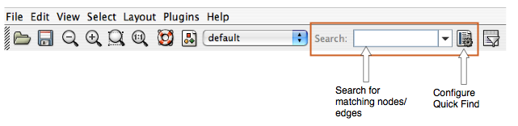
Using Quick Find is very simple. Here is how it works:
Import a network. For example, load up
sampleData/galFiltered.sif.- Start typing in the text box. For example, enter "yd". The search box will automatically display a list of all matching nodes.
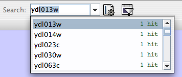
- Select a matching node. Cytoscape will automatically zoom in on the selected node.
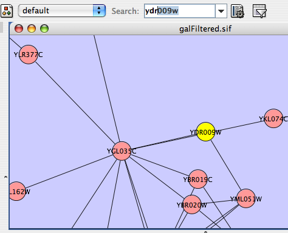
Quick Find works by creating an internal index of all nodes within the network. By default, Cytoscape indexes all nodes by the node identifier. However, you can configure Quick Find to index nodes or edges, and you can set any attribute as the index.
For example, if you load up a BioPAX file (such as sampleData/Apoptosis_BioPAX.xml), your network will be automatically annotated with numerous attributes. To index the network based on cellular location, click the Quick Find configuration button, and select "biopax.cellular_location" from the dropdown list.
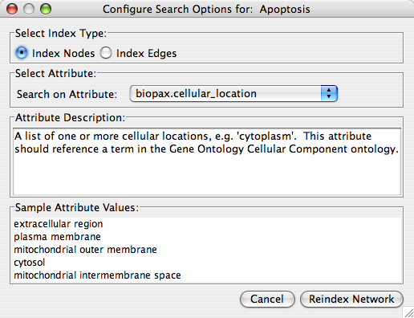
You can then quickly find all proteins located in the "plasma membrane" by just typing "p".
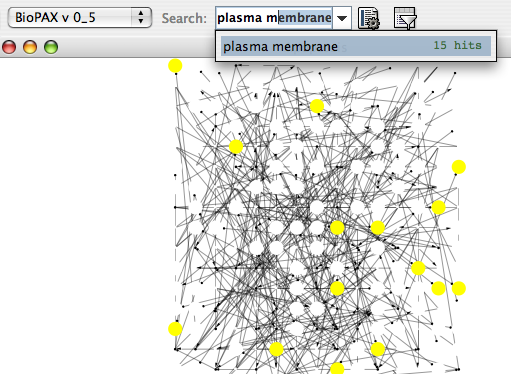
Tip: If you don't know what to search for, just leave the search box empty, and click on the down arrow directly next to the search box. Cytoscape will provide you with an initial list of matches. In the case below, we will get a list of all distinct cellular locations in the network.
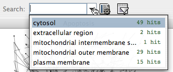
If you choose to index on a numerical attribute, the Quick Find search box changes to a dynamic slider for quick filtering.
For example:
Import a network such as
sampleData/galFiltered.sifusing File → Import → Network (multiple file types).Import an expression data file such as
sampleData/galExpData.pvalsusing File → Import → Attribute/Expression Matrix... .- Configure Quick Find to index the network using the gal1RGExp attribute.
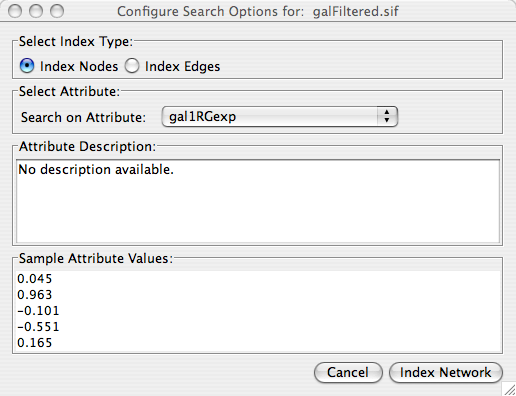
- Use the slider widget to automatically filter the entire network.
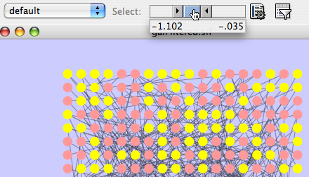
Filters allow you to quickly select multiple nodes or edges of interest by comparing node and edge attributes loaded onto Cytoscape networks to properties you specify. For example, you can select all the nodes whose name contains a specific pattern, or whose numeric attribute value falls within a certain range. Cytoscape provides filters as a core plugin. Users can perform complex selection by defining basic filters (selection based on a single attribute) and compound or Boolean filters (combining basic filters for selection based on multiple attributes).
Based on feedback from Cytoscape users, the Cytoscape team has determined that it is necessary to redesign the user interfaces for the filters. The newly designed filters will preserve all the functionality of the old filters while introducing more user-friendly interfaces. As this process is not yet complete, Cytoscape 2.5 contains both the old filters and a preliminary version of the new filter interfaces. Eventually, the old filters will be replaced by the new filters.
By default, you should see a filter icon on the toolbar:  . If you click on it, the filters tab on the Control Panel at the left of the screen will be selected. You can also access the filters by clicking directly on the tab, or by using the Select → Use Filters menu option. The filters tab initially looks like this:
. If you click on it, the filters tab on the Control Panel at the left of the screen will be selected. You can also access the filters by clicking directly on the tab, or by using the Select → Use Filters menu option. The filters tab initially looks like this:
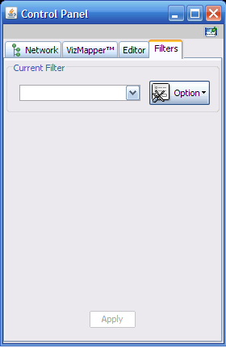
1. Create a filter
To create a filter, click the option button and select “Create new filter…” from the list provided. Enter a name for the new filter.
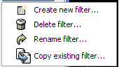

2. Define the filter
After a new filter is created, the filter definition is initially empty. Filters can be defined by choosing attributes (one at a time) in the attribute dropdown list and clicking the Add button, which will add a widget for defining the desired attribute criteria. Note that each attribute has a prefix, either node. or edge., denoting what type of attribute it is.
Text-based (or String) attributes will display a widget listing all available values, while numeric attributes will display a range slider; both are shown below.
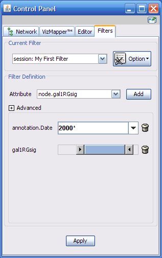
For each widget, the name of the attribute it represents is on the left, and there is a trash-can icon on the right. Clicking on the trash-can icon will delete the widget. In this way, the filter definition can be modified after it is defined.
3. Apply the filter
Now that a filter is defined, you can enter appropriate values (string patterns for text or value ranges for numbers) and click the Apply button to select nodes/edges from your network. The search values for Nodes and edges are selected using text and numeric indices, in the same manner as that of Quick Find.
Note that by default the filter will apply the “AND” relationship if multiple attributes are defined. In the previous figure, the filter will select all the nodes/edges whose Annotation.Date contains the pattern “2000*” and whose gal1RGsig value falls within the defined range. In Cytoscape 2.5, only the "AND" and "OR" relationships can be used. Other Boolean operations (XOR, and NOT) are not yet available. The "OR" relationship can be selected from the advanced options panel, see below.
The Advanced panel can be opened by clicking on the plus (+) sign. It looks like this:
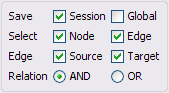
There are four rows in the advanced panel:
1. The first row, labeled Save. The two checkboxes (Global and Session) will determine where the filter is saved. By default, filters are saved in individual sessions. By checking the Global checkbox, the filter will be saved in the global properties file. Note also that the prefix of the filter name in the Current Filter dropdown list will reflect where it is saved.
2. The second row, labeled Select, will determine whether the filter will select network nodes, edges, or both. If Node is checked, Edge is unchecked, then only nodes will be considered for selection, not edges. Note also that the attributes listed in the Attribute dropdown list will be only those with prefix "node.".
3. The third row, edge, will determine either Source or Target nodes will be selected, since there is a distinction between source nodes and target nodes in a directed network.
4. The last row, Relation, will determine what boolean operation will be applied to each individual widget (atomic filter). For the time being, there are only tow options, "AND" and "OR". More boolean operations will be added in the future versions. If you need to do complex selection, please use "the old filters" below.
The Option button at the right of the Current Filter contains a few functionalities other than creating new filters:
- Delete filter: this will delete the selected filter.
- Rename filter: this will give user the option to change the name of the selected filter.
- Copy existing filter: this will duplicate the selected filter.
The old filters is the one existed in previous versions of Cytoscape. Several types of filters are available.
Basic filters allow the selection of multiple nodes or edges according to singe attribute data:
- String filters allow selection of nodes or edges with attributes matching specified text patterns. These patterns may include the wildcards * and ?.
Numerical filters allow selection of nodes or edges according to numerical attributes and the mathematical operators >, =, and <.
Compound filters allow selection based on the application of pre-existing filters:
- Topology filters allow selection of nodes with neighbors that match some pre-existing filter.
- Boolean filters allow the combination of multiple filters using the AND, OR and XOR operators.
Example filters are shipped with the plugin to get started.
To use the old filters, go to Select → Use Old Filters. You will see a filters window which initially looks like the following:
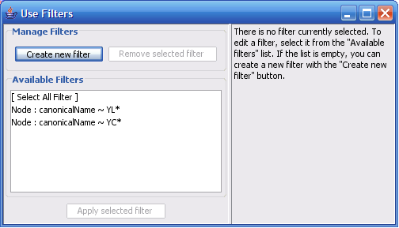
If the first filter is selected, then the window looks as shown:
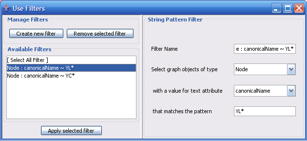
There are three panels in the Filters window:
- The right-hand panel: An existing or newly created filter can be edited in this area. Each filter type has its own user interface for editing.
- The lower left panel: All available filters are shown in this list. Initially, this list will contain only sample filters, but as you create more, they will be added here.
- The upper left panel: Pressing the Create new filter button adds a filter to the “Available Filters” box, and the Remove selected filter button deletes the currently selected filter.
Clicking the Create new filter button allows you to select a type of filter to create, as shown below.
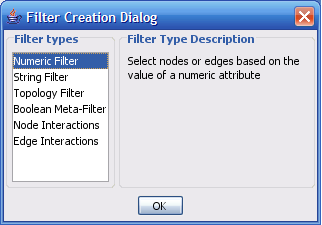
The important thing to realize when creating a filter is that the filter does not do anything by itself. Once created, the filter must be applied to the network.
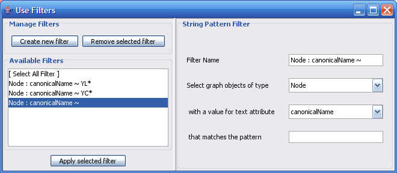
The String Filter allows you to filter nodes or edges by a given text attribute of your current loaded network. Search terms are entered in the text box at the bottom. For example, to match any Node whose canonicalName starts with “YDL”, you would select “Node”, “canonicalName” and then type in “YDL*”. The * is important, as it matches any number of characters after YDL. If you want to be more specific and only select nodes whose canonicalName starts with YDL00 followed by any other two characters, you would type “YDL00??”. The “?” denotes any single character, while the “*” represents zero or more characters. Full regular expression searching is supported, although is not covered here. Once the filter is defined, it will be assigned a default descriptive name.
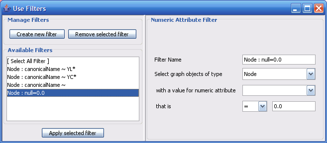
The Numerical Filter also allows you to filter nodes or edges, and presents you with a list of available attributes. This filter matches all values in the network of your selected attribute that are greater than, less than, or equal to a number you type in the search box.
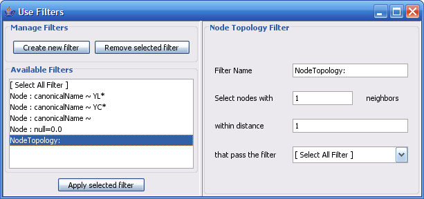
The node topology filter allows you to select all nodes selected by a preexisting filter and having n neighbours found at a distance of m or fewer edges away. For instance, to select all the nodes adjacent to a node with the canonical name matching ‘YD*’, you would “select nodes with 1 neighbors”, “within distance 1”, “that pass the filter Node: canonicalName ~ YD*”.
The node topology filter depends on the existence of other filters. By default, [No Filter] is selected; it doesn't filter out anything, but rather selects all nodes.
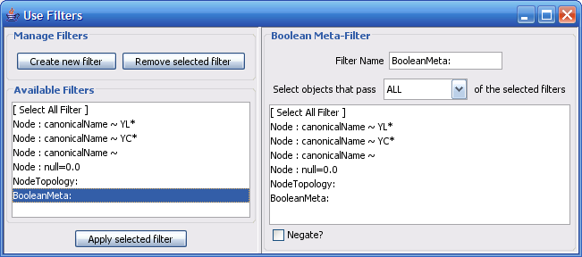
The Boolean Meta-Filter allows you to define a new filter that is a logical combination of existing filters. Available filters are displayed. By selecting one or more filters, you can then choose whether Nodes or Edges pass “ALL” (AND), “AT LEAST ONE” (OR), or “ONLY ONE” (XOR) of the selected filters. Once created, Boolean filters can then themselves be combined using the Boolean filter to create arbitrarily complex logical combinations of filters. Note that unlike the String and Numerical Filters, Boolean filters will need to be assigned a name manually.
Filters are currently saved automatically in the filters.props file found in the .cytoscape directory, found in each user's home directory. Once created, filters are saved for future sessions, as long as you exit Cytoscape normally via File → Quit (i.e. not via ctrl-c on Linux).
Any available filter can be run by pressing the ‘Apply selected filter’ button. When a filter is applied to your network and multiple nodes or edges are selected, all of the normal selection-related operations may be performed, such as Delete Selected Node/Edges, Copy To New Network, and Invert Selection.
The Select → Nodes and Select → Edges menus provide several mechanisms for selecting nodes and edges. Most options are fairly straightforward; however, some need extra explanation.
Select → Nodes → By Name... selects nodes by the node identifier (ID). This is the value seen in the leftmost column of the attribute browser. This does not change, even if the displayed node label changes!
Select → Nodes → From File... selects nodes based on node identifiers found in a specified file. The file format is simply one node id per line:
Node1 Node2 Node3 ...